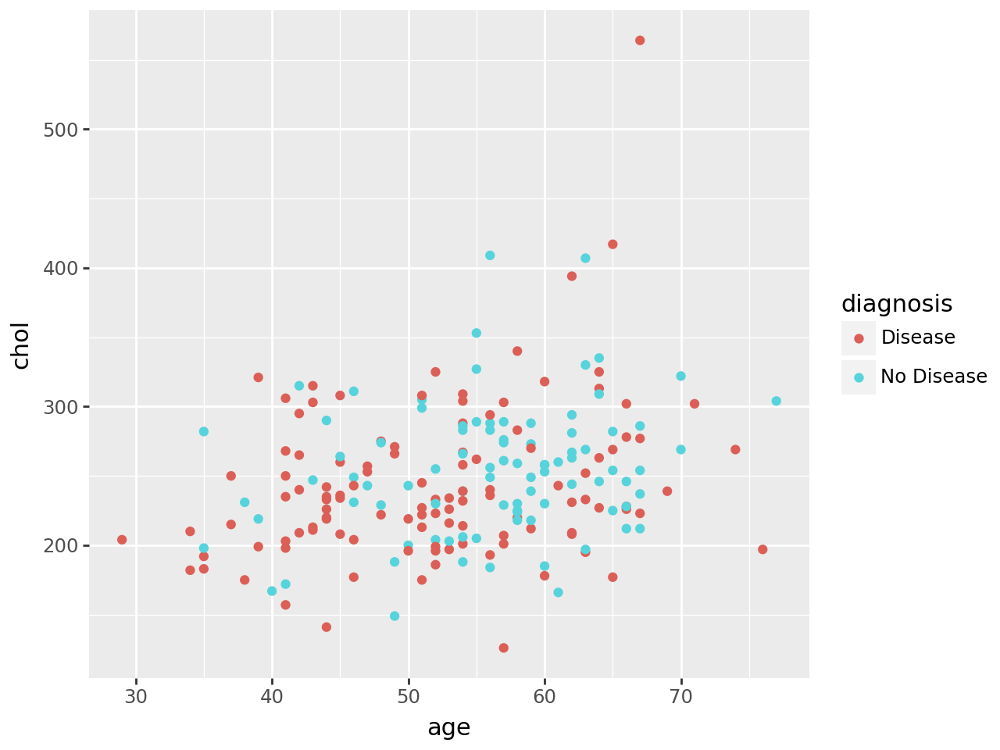
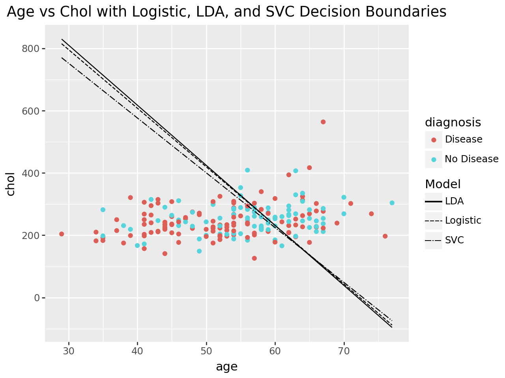

import numpy as np
import pandas as pd
from sklearn.model_selection import StratifiedKFold, GridSearchCV, train_test_split
from sklearn.preprocessing import OneHotEncoder, StandardScaler
from sklearn.compose import ColumnTransformer
from sklearn.pipeline import Pipeline
from sklearn.impute import SimpleImputer
from sklearn.compose import make_column_selector
from sklearn.metrics import roc_curve, auc
from sklearn.model_selection import cross_validate
from sklearn.metrics import roc_auc_score, confusion_matrix, classification_reportThe Data
At this link, you will find a dataset containing information about heart disease patients: https://www.dropbox.com/scl/fi/0vrpdnq5asmeulc4gd50y/ha_1.csv?rlkey=ciisalceotl77ffqhqe3kujzv&dl=1
A description of the original dataset can be found here: https://archive.ics.uci.edu/dataset/45/heart+disease (However, this dataset has been cleaned and reduced, and the people have been given fictious names.)
1. Logistic Regression
Fit a Logistic Regression using only age and chol (cholesterol) as predictors.
For a 55 year old, how high would their cholesterol need to be for the doctors to predict heart disease is present?
How high for the doctors to estimate a 90% chance that heart disease is present?
from sklearn.linear_model import LogisticRegression
ha = pd.read_csv('ha_1.csv')
X = ha[['age', 'chol']]
y = ha["diagnosis"]
X_train, X_test, y_train, y_test = train_test_split(
X, y, test_size=0.2, stratify=y, random_state=42
)
ha.info()
preprocess = ColumnTransformer(
transformers=[
(
"num",
Pipeline([
("numbers", "passthrough")
]),
make_column_selector(dtype_include=np.number)
),
(
"cat",
Pipeline([
("onehot", OneHotEncoder(handle_unknown="ignore"))
]),
make_column_selector(dtype_include=["object", "category"])
),
]
)
logreg_pipe = Pipeline([
("preprocess", preprocess),
("LogReg", LogisticRegression())
])
logreg_pipe.fit(X_train, y_train)
logreg_pipe.score(X_test, y_test)
print(logreg_pipe.named_steps["LogReg"].intercept_)
logreg_pipe.named_steps["LogReg"].coef_<class 'pandas.core.frame.DataFrame'>
RangeIndex: 204 entries, 0 to 203
Data columns (total 9 columns):
# Column Non-Null Count Dtype
--- ------ -------------- -----
0 Name 204 non-null object
1 age 204 non-null int64
2 sex 204 non-null int64
3 cp 204 non-null int64
4 trtbps 204 non-null int64
5 chol 204 non-null int64
6 restecg 204 non-null int64
7 thalach 204 non-null int64
8 diagnosis 204 non-null object
dtypes: int64(7), object(2)
memory usage: 14.5+ KB
[-3.39933661]array([[0.04701165, 0.00249765]])A 55-year-old would need cholesterol of about 326 mg/dL for your model to predict a 50% chance of heart disease.
The logistic regression model estimates a 90% chance of heart disease only if cholesterol is around 1200 mg/dL
2. Linear Discriminant Analysis
Fit an LDA model using only age and chol (cholesterol) as predictors.
For a 55 year old, how high would their cholesterol need to be for the doctors to predict heart disease is present?
from sklearn.discriminant_analysis import LinearDiscriminantAnalysis
lda_pipe = Pipeline([
("preprocess", preprocess),
("lda", LinearDiscriminantAnalysis())
])
lda_pipe.fit(X_train, y_train)
lda_pipe.score(X_test, y_test)
print(lda_pipe.named_steps["lda"].intercept_)
lda_pipe.named_steps["lda"].coef_[-3.38010137]array([[0.04693361, 0.00243241]])For a 55-year-old, their cholesterol would need to be around 328 mg/dL or higher for the LDA model to predict that heart disease is present.
3. Support Vector Classifier
Fit an SVC model using only age and chol as predictors. Don’t forget to tune the regularization parameter.
For a 55 year old, how high would their cholesterol need to be for the doctors to predict heart disease is present?
from sklearn.svm import SVC
svc_pipe = Pipeline([
("preprocess", preprocess),
("svc", SVC(kernel="linear"))
])
param_grid = {
"svc__C": [0.001, 0.01, .1, 10, 100]
}
grid = GridSearchCV(svc_pipe, param_grid, cv=5, scoring = "accuracy")
grid.fit(X_train, y_train)
print(grid.best_params_)
best_svc = grid.best_estimator_
best_svc.score(X_test, y_test)
best_svc.fit(X_train, y_train)
print(best_svc.named_steps["svc"].intercept_)
best_svc.named_steps["svc"].coef_{'svc__C': 0.01}
[-4.68608861]array([[0.06439853, 0.00365901]])For a 55-year-old, cholesterol would need to be ≈ 313 mg/dL for the SVC model to predict heart disease is present.
4. Comparing Decision Boundaries
Make a scatterplot of age and chol, coloring the points by their true disease outcome. Add a line to the plot representing the linear separator (aka decision boundary) for each of the three models above.
from plotnine import *
(
ggplot(ha, aes(x="age", y="chol", color="diagnosis"))
+ geom_point()
)
# Logistic regression
b0_log = -3.39933661
b_age_l = 0.04701165
b_chol_l= 0.00249765
# LDA
b0_lda = -3.38010137
b_age_a = 0.04693361
b_chol_a= 0.00243241
# SVC (linear)
b0_svc = -4.68608861
b_age_s = 0.06439853
b_chol_s= 0.00365901
# ages to draw lines over
ages = np.linspace(ha["age"].min(), ha["age"].max(), 200)
# each model’s line
log_df = pd.DataFrame({
"age": ages,
"chol": -(b0_log + b_age_l*ages) / b_chol_l,
"model": "Logistic"
})
lda_df = pd.DataFrame({
"age": ages,
"chol": -(b0_lda + b_age_a*ages) / b_chol_a,
"model": "LDA"
})
svc_df = pd.DataFrame({
"age": ages,
"chol": -(b0_svc + b_age_s*ages) / b_chol_s,
"model": "SVC"
})
boundaries = pd.concat([log_df, lda_df, svc_df], ignore_index=True)(
ggplot(ha, aes(x="age", y="chol", color="diagnosis"))
+ geom_point()
+ geom_line(boundaries,
aes(x="age", y="chol", linetype="model"),
color="black")
+ labs(x="age", y="chol", linetype="Model",
title="Age vs Chol with Logistic, LDA, and SVC Decision Boundaries")
)